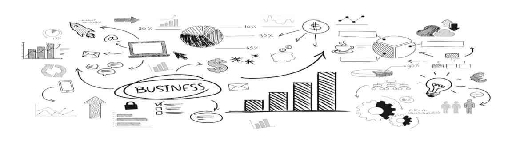

Analytics for Small & Medium Enterprises
Οι Μικρο-Μεσαίες Επιχειρήσεις αποτελούν το βασικό μοχλό ανάπτυξης της οικονομίας. Πάνω από το 50% του ΑΕΠ της Ε.Ε. παράγεται σε ΜΜΕ. Κι ενώ τα analytics πριν 10-20 χρόνια ήταν ένα ακριβό σπορ, που απευθύνονταν κυρίως σε μεγάλες πολυεθνικές που μπορούσαν να χρηματοδοτήσουν πολυπληθείς ομάδες ειδικών και εκτεταμένες υποδομές, τα πράγματα πλέον έχουν αλλάξει. Με τα σύγχρονα εργαλεία ανάλυσης, μικρές ευέλικτες ομάδες μπορούν να βγάλουν insights και να φτιάξουν αυτόματες λύσεις reporting μέσα σε λίγες μέρες (ίσως και ώρες).
Στη σελίδα του site για τα demos, θα μπορείτε να βρείτε έτοιμα reports, tutorials και άλλα analytics resources για να αξιοποιήσετε. Μη διστάσετε να επικοινωνήσετε μαζί μου για απορίες & ερωτήσεις, για την άποψή σας για το τι θα μπορούσε να γίνει επιπλέον και να συζητήσουμε γενικότερα τι μπορούν να προσφέρουν τα Analytics στις Μικρο-Μεσαίες Επιχειρήσεις!